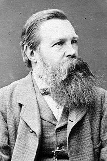
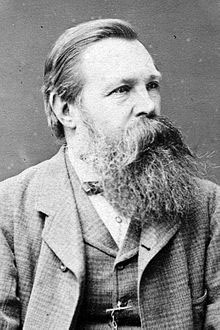

Pengertian Revolusi Industri 4.0
 

Istilah "Revolusi Industri" diperkenalkan oleh Friedrich Engels dan Louis-Auguste Blanqui di pertengahan abad ke-19. Revolusi industri terdiri dari dua (2) kata yaitu revolusi dan industri. Revolusi berarti perubahan yang bersifat sangat cepat, sedangkan pengertian industri adalah usaha pelaksanaan proses produksi. Apabila ditarik benang merah maka pengertian revolusi industri adalah suatu perubahan yang berlangsung cepat dalam pelaksanaan proses produksi dimana yang semula pekerjaan proses produksi itu dikerjakan oleh manusia digantikan oleh mesin, sedangkan barang yang diproduksi mempunyai nilai tambah (value added) yang komersial. Revolusi Industri Keempat adalah sebuah kondisi pada abad ke-21, ketika terjadi perubahan besar-besaran di berbagai bidang lewat perpaduan teknologi yang mengurangi sekat-sekat antara dunia fisik, digital, dan biologi. Revolusi ini ditandai dengan kemajuan teknologi dalam berbagai bidang, khususnya kecerdasan buatan, robot, blockchain, teknologi nano, komputer kuantum, bioteknologi, Internet of Things, percetakan 3D, dan kendaraan tanpa awak.